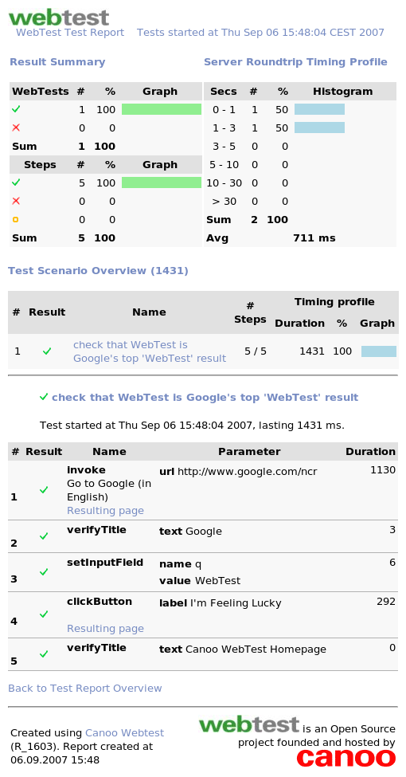

WebTestRecorder
WebTestRecorderWebTest
WebTest is a free Open Source tool for automated testing of web applications in a very effective way.
Look at Key Characteristics for a features' overview.
You write tests like this...
Simple Google Test in XML
<project default="test">
<target name="test">
<webtest
name="check that WebTest is Google's top 'WebTest' result">
<invoke url="http://www.google.com/ncr"
description="Go to Google (in English)"/>
<verifyTitle text="Google" />
<setInputField name="q" value="WebTest" />
<clickButton label="I'm Feeling Lucky" />
<verifyTitle text="Canoo WebTest" />
</webtest>
</target>
</project>
<target name="test">
<webtest
name="check that WebTest is Google's top 'WebTest' result">
<invoke url="http://www.google.com/ncr"
description="Go to Google (in English)"/>
<verifyTitle text="Google" />
<setInputField name="q" value="WebTest" />
<clickButton label="I'm Feeling Lucky" />
<verifyTitle text="Canoo WebTest" />
</webtest>
</target>
</project>
or as Groovy code like this...
the same as Groovy code
import com.canoo.webtest.WebtestCase
class SimpleTest extends WebtestCase {
void testWebtestOnGoogle() {
webtest("check that WebTest is Google's top 'WebTest' result") {
invoke "http://www.google.com/ncr", description: "Go to Google (in English)"
verifyTitle "Google"
setInputField name: "q", value: "WebTest"
clickButton "I'm Feeling Lucky"
verifyTitle "Canoo WebTest"
}
}
}
class SimpleTest extends WebtestCase {
void testWebtestOnGoogle() {
webtest("check that WebTest is Google's top 'WebTest' result") {
invoke "http://www.google.com/ncr", description: "Go to Google (in English)"
verifyTitle "Google"
setInputField name: "q", value: "WebTest"
clickButton "I'm Feeling Lucky"
verifyTitle "Canoo WebTest"
}
}
}
... and get comprehensive results
with all details and responses received from the server(s): 